Instrucciones
- Desarrollar un pequeño videojuego en Windows y Linux.
Requerimientos
- Conexión a internet para poder descargar el juego que ejecutaremos.
- Java.
Comencemos
- Lo primero que haremos será ingresar a la siguiente liga para descagar el juego que vamos a ejecutar en esta práctica.
La ventaja de este caso es que le juego está desarrollado en Java, de modo que no deberíamos tener problema alguno para correrlo, debido a que en un tutorial anterior ya nos encargamos de instalar Java en ambos sistemas operativos. - Una vez ingresando a la liga de github, podremos acceder al archivo .rar (desde el cuál podremos acceder a todo el código fuente del proyecto, de manera que podríamos estudiarlo, analizarlo e incluso modificarlo si así nos place), o podremos también acceder directamente al archivo .jar, con el que podremos automáticamente ejecutar el juego en ambos sistemas operativos sin problema alguno.
- Para poder ejecutar el programa en Ubuntu lo que haremos será abrir una consola de comandos en donde se encuentra nuestro archivo .jar (o abrir una consola en cualquier ubicación y dirigirnos a donde se encuentra
el archivo), y escribiremos el siguiente comando:
java -jar Diamond_Hunter.jar
- Una vez que accedamos a Windows deberemos descargar nuevamente el programa (.jar), y ejecutarlo. En este caso es más sencillo, ya que para correrlo bastará con dar doble clic sobre él, y lo veremos funcionando.
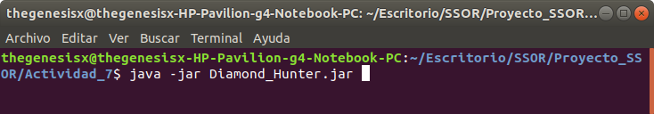
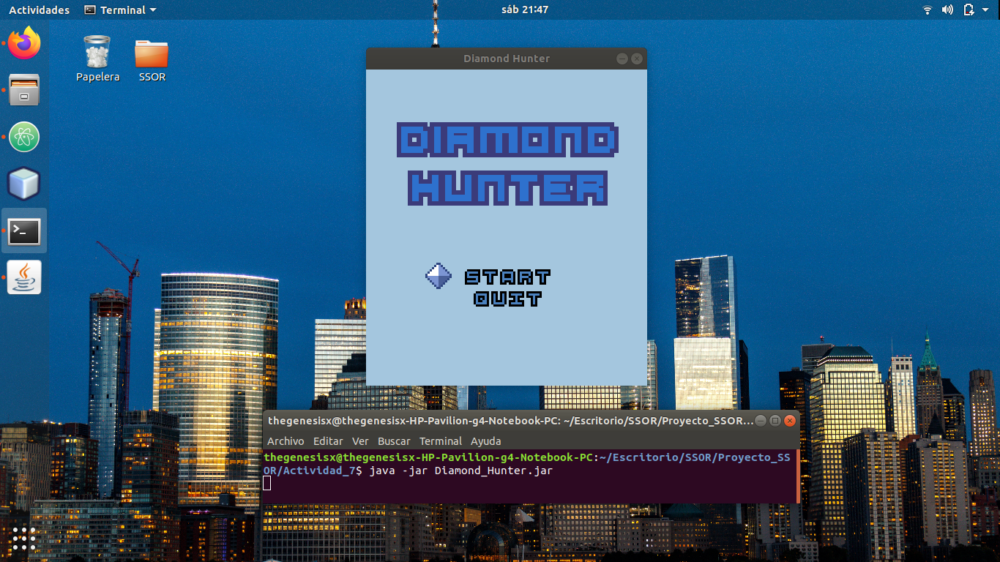
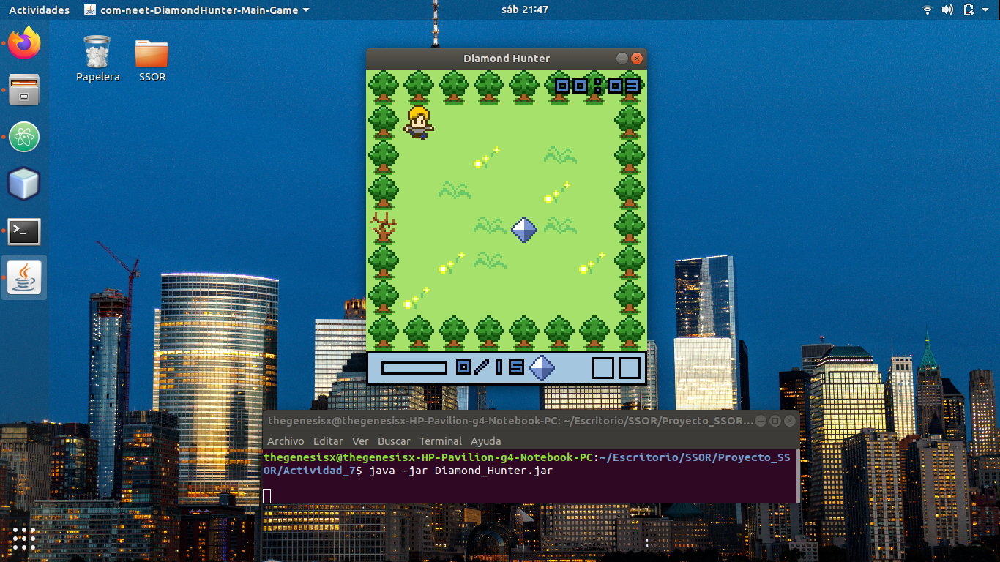
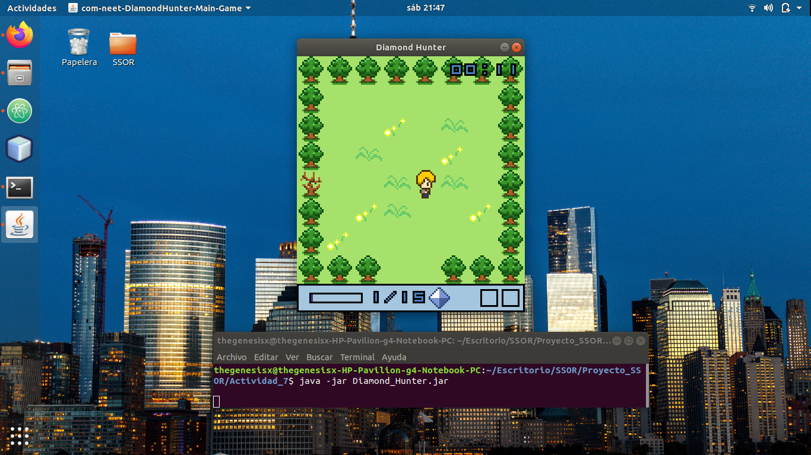
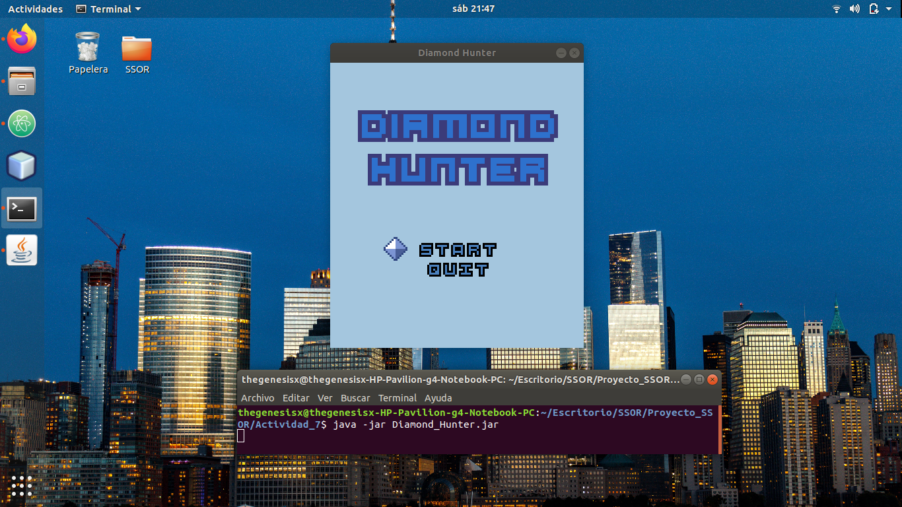
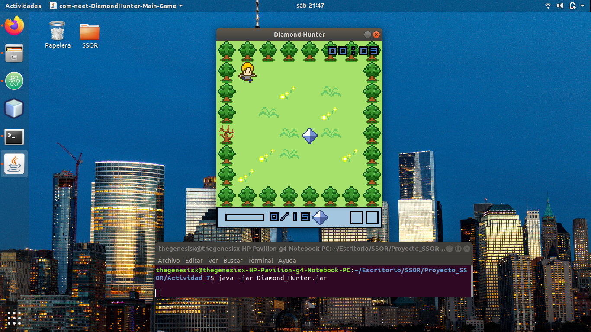
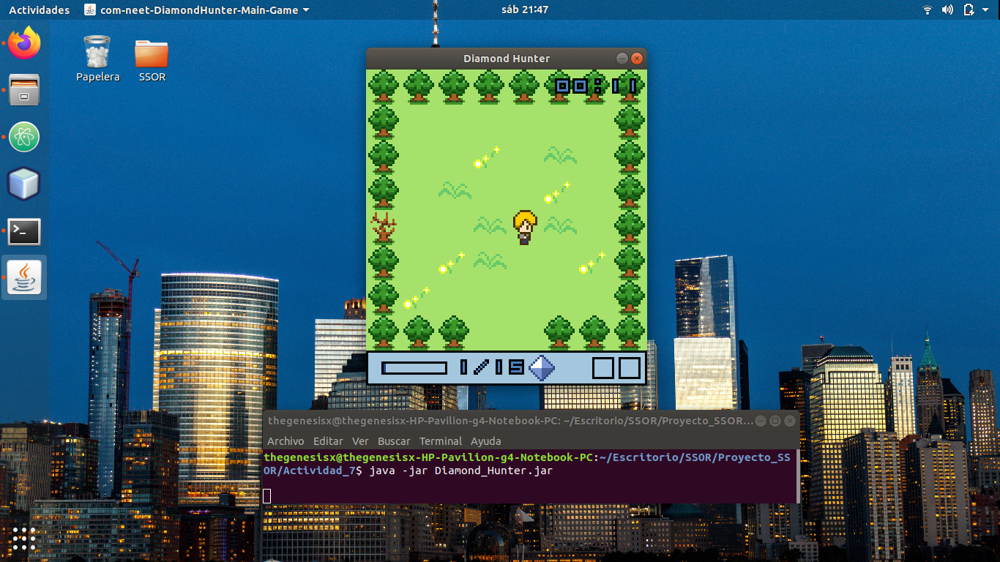
Y listo. Tendremos el juego ejecutándose en Linux sin ningún problema. Siempre y cuando hayamos instalado previamente Java, como lo hicimos en una práctica pasada.
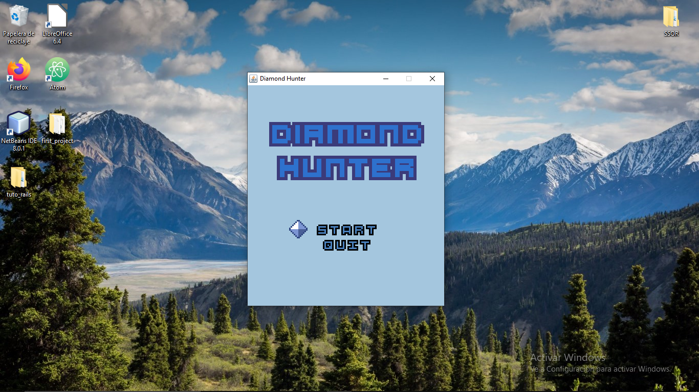
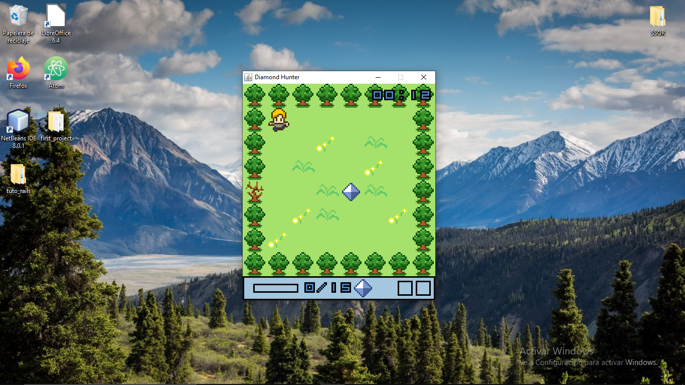
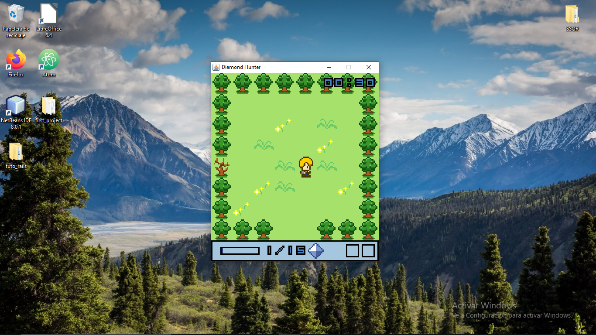
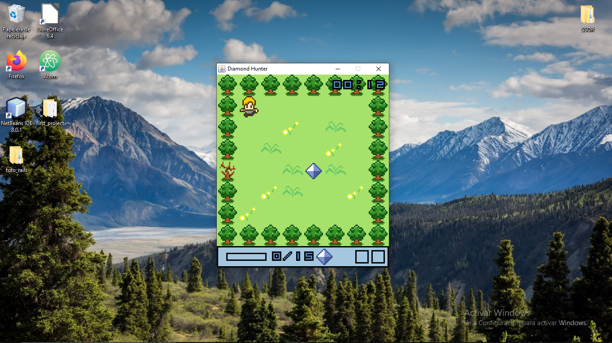
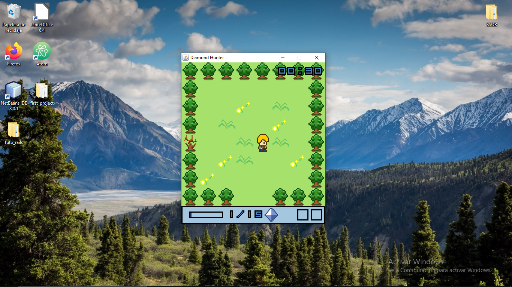
Y listo. Tendremos el juego funcionando igualmente en Windows.